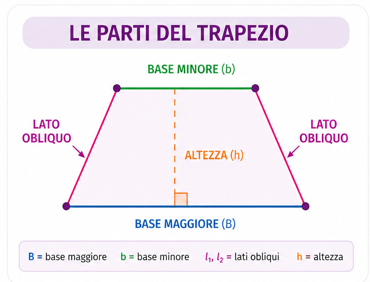
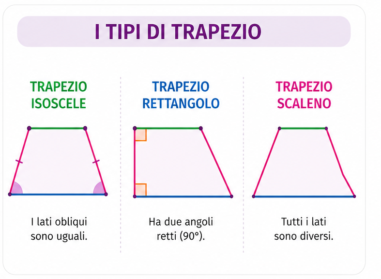
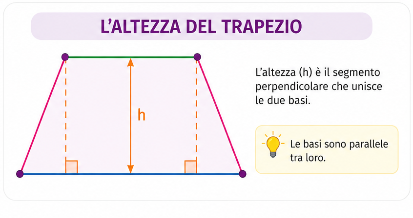

Conosci il trapezio, le sue caratteristiche, il perimetro e l'area.
Il trapezio è un quadrilatero con due lati paralleli, chiamati base maggiore e base minore.
Gli altri due lati si chiamano lati obliqui.


Il perimetro è la somma dei quattro lati.
Per calcolare l'area bisogna conoscere le due basi e l'altezza.
L'altezza è il segmento perpendicolare che unisce le due basi.

Domanda
Quante basi ha un trapezio?
Risposta
Due basi: una maggiore e una minore.
Domanda
Come sono le basi?
Risposta
Sono parallele.
Domanda
Formula del perimetro?
Risposta
P = B + b + l₁ + l₂
Domanda
Formula dell'area?
Risposta
A = ((B + b) × h) ÷ 2
Domanda
Cos'è l'altezza?
Risposta
È il segmento perpendicolare che unisce le due basi.